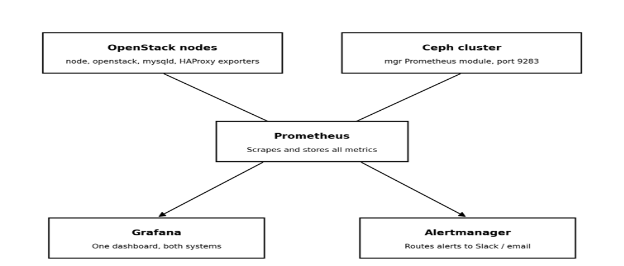

OpenStack Cluster Integrated with Ceph Monitoring Approach
Prometheus + Grafana, run as one shared instance scraping both OpenStack and Ceph, is the best fit for monitoring the entire integrated cluster.
Mechanics
Kolla-Ansible already deploys Prometheus + Grafana as part of the OpenStack stack, with exporters for Nova, Neutron, Cinder, Keystone, HAProxy, MariaDB, RabbitMQ, and hosts (node_exporter).
On the Ceph side, ‘ceph mgr module enable prometheus’ exposes a native /metrics endpoint on port 9283 — no separate agent needed.
Add Ceph’s MGR node(s) as an additional scrape target in the same Prometheus prometheus.yml that Kolla manages.
Import Ceph’s official Grafana dashboards (Cluster, OSD, Pool, RBD Overview) into the same Grafana instance that already holds the OpenStack dashboards.
Build cross-domain panels — e.g., Nova VM boot time next to Ceph OSD latency, or Cinder volume creation next to Ceph pool IOPS — so a single screen shows whether a slowdown originates in the compute/API layer or the storage backend.
Route both OpenStack and Ceph alert rules through one Alertmanager/Grafana Alerting pipeline into the same Slack/email channel.
Architecture

Prometheus
Prometheus is an open-source metrics collection and time-series database system. It works on a “pull” model — it periodically scrapes (fetches) metrics from configured targets rather than waiting for those targets to push data to it.
Collects and stores time-series metrics (numeric data points with timestamps).
Uses PromQL (Prometheus Query Language) to query and analyze stored metrics.
Pulls data from exporters — small agents that expose metrics in a Prometheus-readable format (e.g., node_exporter for host metrics, openstack-exporter for OpenStack, ceph-mgr Prometheus module for Ceph).
Stores data locally in its own time-series database, with configurable retention.
Acts as the central data layer in this monitoring stack — everything else (Grafana, Alertmanager) reads from Prometheus; it does not collect data on its own.
Lightweight, container-friendly, and already deployed by default in a Kolla-Ansible OpenStack install.
In this deployment: Prometheus scrapes both OpenStack exporters and the Ceph Prometheus mgr module (port 9283), making it the single source of truth for metrics across the integrated stack.
Grafana
Grafana is an open-source visualization and dashboarding tool. It does not collect or store metrics itself — it connects to a data source (in this case, Prometheus) and turns the raw time-series data into graphs, panels, and dashboards.
Connects to Prometheus (or other data sources) to pull and display data.
Provides pre-built and customizable dashboards with graphs, gauges, tables, and heatmaps.
Supports importing ready-made dashboard templates (JSON) — OpenStack and Ceph both publish official dashboards that can be dropped in directly.
Allows building combined panels, e.g., placing OpenStack API latency next to Ceph OSD latency on the same screen.
Includes built-in Grafana Alerting, a GUI-based way to define alert rules without writing YAML.
Web-based UI, accessible to non-CLI users — this is what makes the stack “user-friendly” compared to CLI-only tools.
In this deployment: Grafana is the single visualization layer showing both OpenStack and Ceph dashboards side by side, using Prometheus as its data source.
Alertmanager
Alertmanager is the alert routing and notification component of the Prometheus ecosystem. Prometheus itself evaluates alert rules and generates alerts, but it hands those alerts off to Alertmanager, which decides how and where to send them.
Receives alerts fired by Prometheus (based on rules like “Ceph OSD down” or “HAProxy backend unhealthy”).
Handles deduplication — avoids sending the same alert multiple times.
Handles grouping — bundles related alerts into a single notification instead of flooding the channel.
Handles silencing — allows temporarily muting known/expected alerts (e.g., during planned maintenance).
Routes notifications to configured receivers: Slack, email, PagerDuty, webhook, etc.
Configured via a YAML file defining routing rules and receivers.
In this deployment: Alertmanager (or Grafana’s built-in alerting, as a simpler GUI alternative) takes alert rules covering both OpenStack and Ceph thresholds and routes them to one shared notification channel for the on-call team.
How the Three Work Together
Component |
Role |
Analogy |
|---|---|---|
Prometheus |
Collects and stores metrics |
The sensor + logbook |
Grafana |
Visualizes the stored metrics |
The dashboard/display screen |
Alertmanager |
Decides who gets notified, and how |
The alarm system’s control panel |
Why This Is the Best Tool for Monitoring the Integrated Cluster
Single Prometheus instance scrapes metrics from both OpenStack and Ceph simultaneously.
Kolla-Ansible already deploys Prometheus + Grafana by default — no new tool needed, just extension.
Ceph natively exposes a Prometheus-compatible metrics endpoint — no extra agent required.
Both systems’ data lands in one Grafana instance, giving a single dashboard view instead of two separate tools.
Enables direct root-cause correlation between OpenStack symptoms and Ceph-layer causes.
One alerting pipeline (Grafana Alerting / Alertmanager) covers both systems together.
Open source and container-native, fitting the Kolla/Docker model directly rather than fighting it, with no licensing cost at data-center scale (see 2.6).
Why Not the Other Tools Summary
Tool |
Why It Is Not the Best Fit for the Whole Integrated Cluster |
|---|---|
Zabbix |
No native OpenStack or Ceph exporters — everything has to be custom-built as agent checks/templates. Older, less visual UI. |
Ceph Dashboard (alone) |
Only sees Ceph. Completely blind to Nova, Neutron, Keystone, HAProxy — cannot tell if a slow VM boot is a compute problem or a storage problem. |
Telegraf + InfluxDB + Grafana |
Requires building/maintaining custom Telegraf input plugins for OpenStack and Ceph instead of using native, ready-made exporters. |
ELK / OpenSearch (alone) |
Excellent for logs, weak for real-time metrics, capacity trending, and threshold-based alerting. |
Nagios/Icinga |
Check-based (up/down), not metrics/time-series based — cannot show capacity trends or correlate two systems visually. |
Two separate Grafana instances |
Technically works but defeats the purpose — still requires mentally correlating two screens during an incident. |
The Core Difference: Zabbix vs. Grafana + Prometheus
Capability |
Zabbix |
Grafana + Prometheus |
|---|---|---|
Collects data |
Yes, built-in agents |
No — needs Prometheus to collect |
Stores data |
Yes, built-in |
No — Prometheus stores it |
Shows dashboards |
Yes, built-in (but plain-looking) |
Yes, and much prettier/more flexible |
Sends alerts |
Yes, built-in |
Needs Alertmanager (separate piece) |
Understands OpenStack/Ceph out of the box |
No — custom scripts required |
Yes — ready-made exporters already exist |